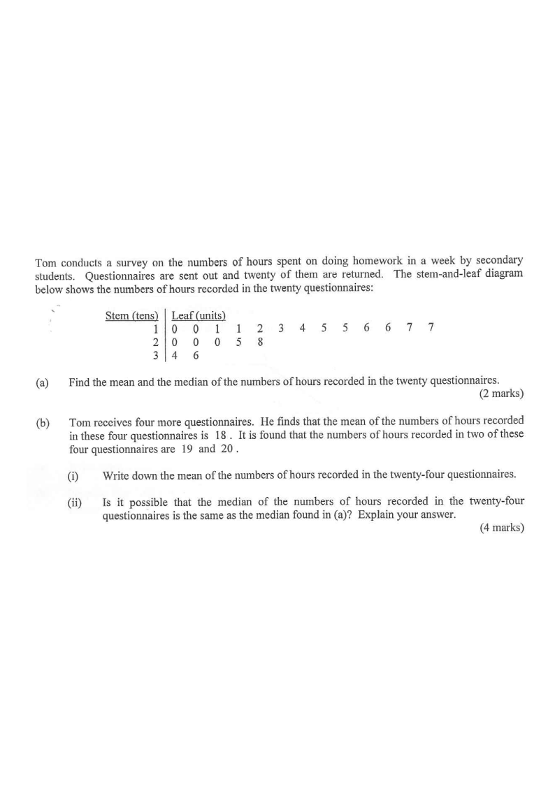

Step 1 — The given stem-and-leaf diagram (20 questionnaires).
Tom conducts a survey on the numbers of hours spent on doing homework in a week by secondary students. Questionnaires are sent out and twenty of them are returned. The stem-and-leaf diagram below shows the numbers of hours recorded in the twenty questionnaires:
| Stem (tens) | Leaf (units) | |||||||||||||||
|---|---|---|---|---|---|---|---|---|---|---|---|---|---|---|---|---|
| 1 | 0 | 0 | 0 | 1 | 1 | 2 | 3 | 4 | 5 | 5 | 6 | 6 | 7 | 7 | ||
| 2 | 0 | 0 | 0 | 5 | 8 | |||||||||||
| 3 | 4 | 6 | ||||||||||||||
(a) Find the mean and the median of the numbers of hours recorded in the twenty questionnaires. [2 marks]
(b) Tom receives four more questionnaires. He finds that the mean of the numbers of hours recorded in these four questionnaires is 18. It is found that the numbers of hours recorded in two of these four questionnaires are 19 and 20.
(i) Write down the mean of the numbers of hours recorded in the twenty-four questionnaires.
(ii) Is it possible that the median of the numbers of hours recorded in the twenty-four questionnaires is the same as the median found in (a)? Explain your answer. [4 marks]

From the stem-and-leaf diagram (stem = tens, leaf = units), the twenty values are:
$10,10,10,11,11,12,13,14,15,15,16,16,17,17,\;20,20,20,25,28,\;34,36$
Careful: the 2-row leaves are 0,0,0,5,8 → 20,20,20,25,28; the 3-row gives 34 and 36.
Sum of the twenty values:
$10+10+10+11+11+12+13+14+15+15+16+16+17+17 = 187$
$20+20+20+25+28 = 113,\qquad 34+36 = 70$
$\text{Total} = 187+113+70 = 370$
$$\text{Mean} = \frac{370}{20} = 18.5$$
Hint: sum all 20 values, then divide by 20. (1A)
With $n=20$ (even), the median is the average of the $10^{\text{th}}$ and $11^{\text{th}}$ values when arranged in ascending order.
Counting: the $10^{\text{th}}$ value $= 15$ and the $11^{\text{th}}$ value $= 16$.
$$\text{Median} = \frac{15+16}{2} = 15.5$$
Hint: for 20 data, average the two middle values. (1A)
Sum of the 4 new values $= 4 \times 18 = 72$.
Total sum of 24 values $= 370 + 72 = 442$.
$$\text{New mean} = \frac{442}{24} = 18.4\overline{1} = \frac{221}{12} \approx 18.4$$
Hint: combine the two totals, then divide by 24. (1A)
Let $a$ and $b$ be the other two recorded numbers (with $a \le b$).
Since the mean of the four new numbers is 18:
$$\frac{a+b+19+20}{4} = 18 \;\Rightarrow\; a+b+39 = 72 \;\Rightarrow\; a+b = 33 \quad (1\text{M})$$
Hint: express the condition on $a$ and $b$ using the given mean of 18.
Suppose the median of the 24 values is also $15.5$.
Since $n = 24$ (even), this is the average of the $12^{\text{th}}$ and $13^{\text{th}}$ values. The numbers 19 and 20 exceed 15.5, so the only new values that could enter the middle are $a$ and $b$. Hence both must be at most 15.5, i.e.
$$a \le 15.5,\quad b \le 15.5 \;\Rightarrow\; a+b \le 31$$
But Step 5 requires $a+b = 33$.
Hint: for the average of the 12th and 13th values to be 15.5, both $a$ and $b$ must not exceed 15.5. (1M)
We would need $a+b \le 31$ and $a+b = 33$ simultaneously — a contradiction.
Therefore it is impossible for the median of the twenty-four questionnaires to be the same as the median found in (a).
Hint: state the contradiction clearly and give the conclusion. (1A)
Answer:
(a) Mean $= \dfrac{370}{20} = 18.5$ ; Median $= \dfrac{15+16}{2} = 15.5$
(b)(i) Mean $= \dfrac{442}{24} = \dfrac{221}{12} \approx 18.4$
(b)(ii) No — it is impossible. We need $a+b = 33$ but also $a \le 15.5$ and $b \le 15.5$ (which forces $a+b \le 31$); this is a contradiction.
Question. A stem-and-leaf diagram (stem = tens, leaf = units) records the marks of \(20\) students: \(12,12,13,13,14,15,16,16,17,18,18,19,20,20,22,23,24,25,28,30\). (a) Find the mean and the median. (b) Four more students are added, their mean mark is \(21\), and two of their marks are \(22\) and \(24\). Is it possible that the median of the \(24\) marks is still \(18\)? Explain.